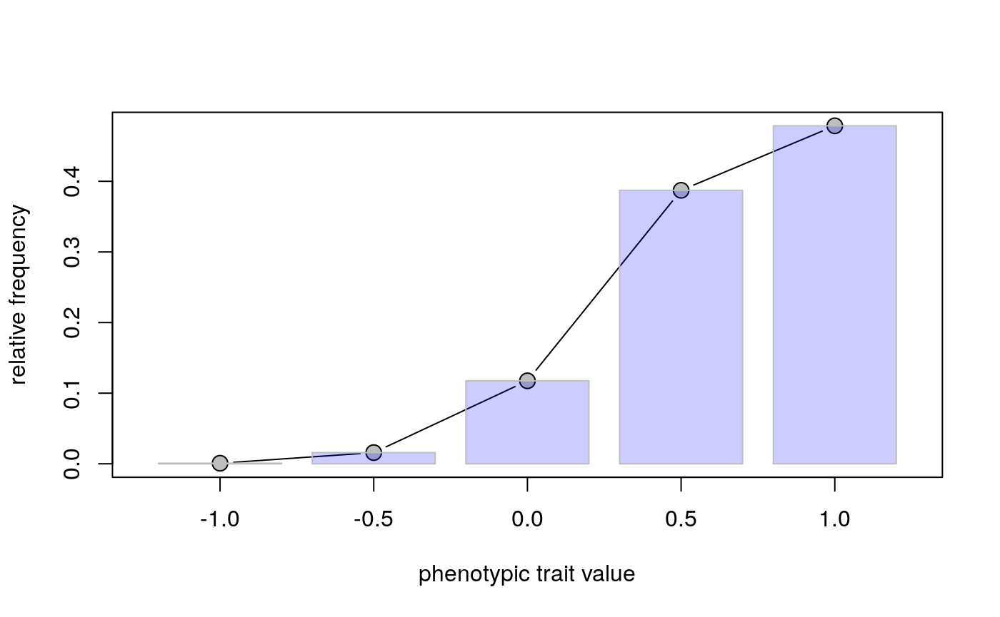
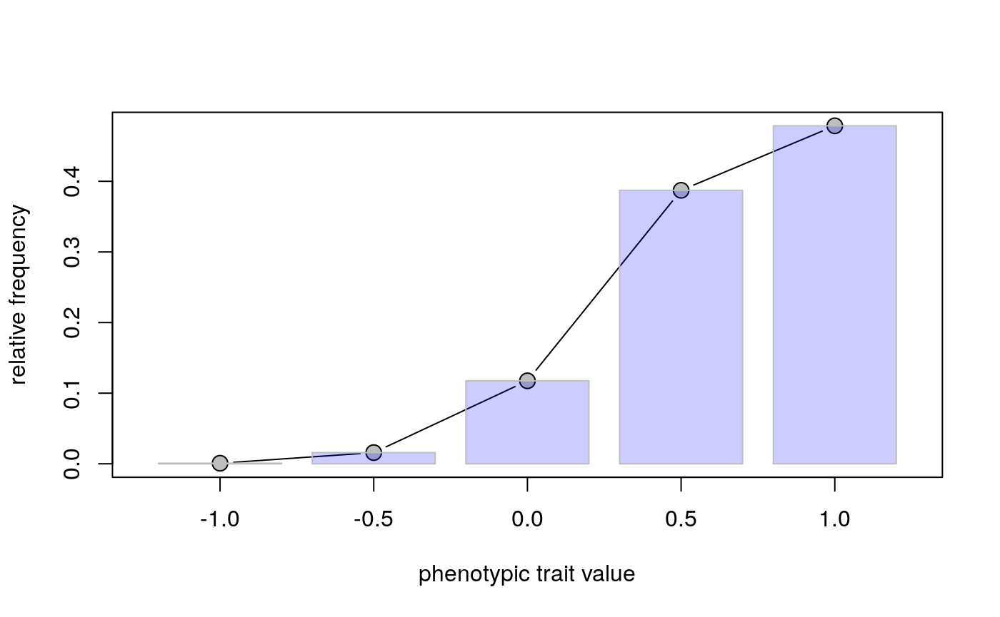

WeekThree
WeekThreeSelection.RmdIn class, we’ve been talking about variation. Let’s take a deeper look at how genetic variation relates to the traits an organism has. To do this, we will work with an R package called ‘learnPopGen’. First, let’s look at how many traits are generated from one locus.
Why does the plot look like this?
What happens when you increase the number of loci to 2? To 4? What is the relationship between number of loci and the number of phenotypes?
You can generate a lot of phenotypes from a small number of loci! As we start to think about natural selection, let’s simplify this by thinking about one gene with two alleles. Assume at our gene, we have A and a alleles. A is the most fit. We’ll now simulate natural selection at this gene. Assume that big A is rare - only ten percent of the population has it. But it’s very fit - all individuals with big A survive, while only 90% of heterozygotes and 80% of little a recessives do. We will enter these values below like so. How common will big A be in the future?
By 100 generations, everyone is big A!
What if it was really bad to have the recessive homozygous genotype? Try another value for the fitness of the homozygote recessive. Below, note what value you chose for the homozygous recessive and how long it took for big A to be the only allele in the population?
The type of selection we have simulated is directional selection: the favoring of one allele and phenotype over another. Can you find a set of condictions in which directional selection does not lead to the loss of one allele?
What if one homozygote is not the most fit? If the heteozygote is the most fit, do we preserve variation? Why or why not?
The heterozygote being the most fit is often called heterozygote advantage.
Finally, let’s think about selection at multiple genes. Try the following:
 



What do you think beta is in this function? If you’re having a hard time, try making beta negative. Does this help clarify?
Homework
In our explorations today, we’ve often seen that a good allele becoming dominant in a population might take 100 or so generations. Have a look at this map of projected temperature change for Tangipahoa Parish here. How much is the temperature projected to rise here?
Turtles, such as the red-eared slider locally, have temperature-dependent sex determination. This means that they don’t have sex chromosomes that determine sex. Instead, sex is determined by the incubation temperature of the nest. Males tend to be produced at cool temperatures, and females at warmer ones. If the climate predictions are true, what will happen to the proportion of males over time? Do you think this will be a problem?
If a mutation arose that allowed genetic control of sex, what would you expect to happen to that mutation? Would 30 years be enough time to prevent males from going extinct?